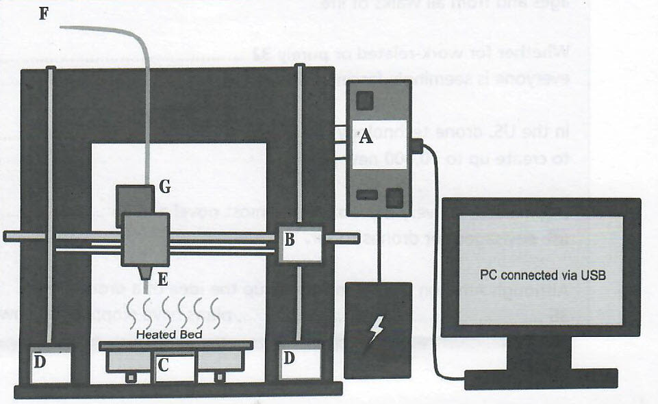

Part 1
READING PASSAGE 1
Read the text on the next page and answer Questions 1-13.
3D Printers
Ever wished you could find a pair of shoes to match your outfit? Fancy a pizza but don't want to go out or wait for your delivery service to arrive? Simple. All you need is a 3D home printer. Whilst admittedly not yet mainstream technology, it is only a matter of time until the 3D printer becomes as much a part of the domestic furniture as the statutory TV or the washing machine. Currently, however, the technology remains firmly in the province of geeks and gadget lovers.
The design of the 3D home printer is nevertheless refreshingly simple. Its components are relatively few, and could theoretically be assembled by anyone with a rudimentary knowledge of mechanics and technological know-how. The 3 main elements of the printer are a metal framework which contains the mechanical part of the printer, a printer control board and a PC. The PC is connected via USB to the printer control board, which in turn is connected to the framework of the printer and attached to the side of the latter. A plastic filament of around 3m m in diameter feeds into the printer from an external source, connecting to the extruder motor inside the printer. During printing, the controlled movement of the extruder motor ensures the correct volume of plastic is used. The extruder motor in turn is connected to a heated extruder or 'hot end' that heats the plastic filament during printing. As the heated plastic emerges or is 'extruded' to use the correct terminology, it cools and is arranged in layers to create a solid 3D model.
In order to move the extruder about in 3D space, there are 3 axes, each controlled by motors. The X-axis motor, located in a midway position on the metal framework of the printer, moves the extruder left and right, using a pulley. The two Z-axis motors, which are located on either side of the heated printing bed, move the entire X-axis up and down via two threaded rods. The heated bed of the printer, which lies directly underneath the hot end of the extruder, is moved back and forth beneath the extruder by the Y-axis motor located underneath the heated bed. The bed is heated to around 70 degrees Celsius to ensure the newly laid plastic does not warp as it cools. Overall control of the printer is effected by the printer control board and the PC which contains the programme of the model that is being printed.
Once assembled, in theory it should be possible to print a 3D version of virtually anything. However, comparatively easy as it is to assemble, would-be DIY gadget enthusiasts should be warned that the printer has major technical limitations. The finished product will always have banding and surface detail remaining as evidence of how the model was laid down. In addition, operators of the printer have to be extremely careful not to knock it whilst the machine is in the process of printing, since this will end up in model distortion. Extreme care also has to be taken in the choice of plastic filament which will ultimately create the structure of the model. Some types of plastic may warp if the temperature is not controlled properly when the melted plastic leaves the nozzle, and later, when it is cooling on the bed. Obviously the 3D model will be the same colour as the plastic filament forming it, but colour limitations can easily be overcome by painting afterwards for a multicolour finish. Another problem is that the plastic structures have to be supported as they are laid down on the heated bed or they will distort or fall away as the plastic cools.
It is virtually certain, however, that such issues will be overcome in the future. The innumerable advantages of 3D printers far outweigh any disadvantages and justify time and resources spent on such technology. Firstly, the product can be produced on the spot within a very short time frame, thereby reducing time and cost of manufacturing by traditional means. Secondly, printing objects on a 3D printer removes the need for storage space of items since whatever is required is printed as and when necessary. Finally, despite expensive set-up costs, in the long run, 3D printing works out far cheaper than normal manufacturing processes since there is no longer a need for labour costs.
However, the 3D printer is still very much in its early stages and can be likened to early home computers which in technological hindsight now seem so cumbersome and slow. So far, early experimentations with the new technology have been impressive but not earth-shattering. Nevertheless, in the future that is all set to change. In fact, the potential of 3D printers is jaw-dropping. The most ambitious plan yet for 3D printing has to be in the military field. If all goes to plan, fighter planes will at some, probably very distant, point in the future carry printers on board that during flight will be capable of printing out other fighter planes to replenish the flying squad. Admittedly, it takes a quantum leap of the imagination to accept that a machine that prints out clothing and pizzas will also be able to print out planes. Sceptics, however, should remember that one of the forerunners to the modern computer, designed in the mid-twentieth century, filled an entire room, So, in theory, if we have come so far in a matter of years then who knows what the future may hold for 3D printers?
Part 2
READING PASSAGE 2
Read the text below and answer Questions 14-26.
Nanotechnology: its development and uses
A Nanotechnology has been hailed by many as being a twentieth-century miracle of science. Essentially, nanotechnology, a term derived from Greek, translating literally as 'dwarf technology' is, as the origin of its name suggests, engineering at the atomic level. Scientists work with particles of substances known as 'nanoparticles' which may measure no more than 1 nanometre or a billionth of a metre. That's around 40,000 times smaller than the width of the average human hair. Whilst some of these substances derived from carbon compounds are manufactured, others, such as metals, are naturally-occurring or arise as a by-product of another process e.g. volcanic ash or smoke from wood burning. What makes these substances of such scientific interest is that their minute size facilitates medical and technological processes that would otherwise be impossible.
B It may be something of a revelation for many of us to learn that nanotechnology - or its concept - is far from cutting-edge science. In fact, nanotechnology as an idea was first referred to in an influential lecture by American physicist, Richard Feynman, as far back as 1959. During the lecture, entitled 'There's Plenty of Room at the Bottom', Feynman outlined the basic concept of nanotechnology. Individual atoms and molecules, he claimed, could in the future be created by a physical process. Such a process, he envisaged, would involve the building of a set of precise tools to build and operate another proportionally smaller set. The building of increasingly minute tools at the microscopic level would in turn produce ultra-microscopic materials, later to become known as 'nanoparticles'.
C Strangely, what should have sparked a scientific revolution was then virtually forgotten about for the next 15 years. In 1974, a Japanese scientist, Norio Taniguchi, of the Tokyo University of Science reintroduced Feynman's theory and put a new name to an old concept, referring to the science as 'nanotechnology'. However, it wasn't until nearly a decade later, in the 1980s, that the way was paved for nanotechnology to leave the realm of theoretical science and become reality. Two major scientific developments within a relatively short period were to enable practical application of nanotechnology. The invention of the Scanning Tunnelling Microscope (STM), combined with the discovery of nano-sized particles termed 'fullerenes', were to prove a turning point in nanotechnology.
D Fullerenes are derived from carbon molecules and, in common with other nanoparticles, possess chemical and physical properties that are of huge scientific interest. The potential value of fullerenes for medical science was first raised in 2003 and in 2005 when the scientific magazine 'Chemistry and Biology' ran an article describing the use of fullerenes as light-activated antimicrobial agents. Since then, fullerenes have been used for several biomedical applications ranging from X-ray imaging to treating cancer by targeting cancer cells. In addition, these nanoparticles have been used in the manufacture of commercial products, from sunscreen to cosmetics and some food products. Furthermore, nanoparticles of metals, like gold and silver, have been used in environmental clean-ups of oil slicks and other forms of pollution. The remarkable properties of nanoparticles are down to two main factors: their greater surface-to-weight ratio, compared to larger particles which promotes the attachment of substances to their surface, and their minute size which allows them to penetrate cell membranes. These properties are of great benefit, for example in medicine, as drugs to fight cancer or AIDS can be attached to nanoparticles to reach their target cell in the human body.
E However, despite the amazing properties attributed to nanoparticles such as fullerenes, nanotechnology has yet to win wider universal acceptance in scientific circles. For the very properties that make nanoparticles so valuable to technology and medical science are also the ones that make them potentially so toxic. Such pro perties are potentially lethal if toxic substances attach themselves to the same nanoparticles, thereby delivering a fatal toxin through the cell membranes into the cells themselves. The toxic effect of these compounds is further increased, since their size permits them to enter the bloodstream and hence the body's major organs. Furthermore, the nanoparticles in themselves are essentially a foreign element being introduced to the body. Unlike foreign elements, such as bacteria, the body has no natural immune system to deaI with these ultramicroscopic particles. Scientists have yet to convince the nanotechnology sceptics that the potential side effects of nanoparticles are more than compensated for by the advantages that they confer. It may be, however, that opposition to this technology is no more than a general distrust of scientific innovation. In fact, Urban Wiesing from the University of Tubingen has been quoted as saying 'Many of the risks associated with nanotechnology have at least been encountered in part in other technologies as well.' He also believes that regulations can be put in place to minimise such risks. This is a view echoed by the Fed eral Environment Agency that proposes that such risks are vastly outweighed by the potential benefits of nanotechnology, in particular for the environment.
Part 3
READING PASSAGE 3
Read the text below and answer Questions 27-40
Driverless cars
Driverless cars may be set to become reality. At least that is, if the executives behind the taxi app, Uber, are to be believed. Currently, Uber is taking its biggest steps yet towards a driver-free world, launching the Uber Advanced Technologies Centre in Pittsburgh. The ultimate goal of this institution is to 'do research and development, primarily in the areas of mapping and vehicle safety and autonomy technology'.
To date, Uber has provided a chauffeur-driven taxi service for American clients. Venturing into the realms of driverless cars is therefore a new direction which will require massive investment. It is indeed a huge leap of faith on Uber's part, since technology has yet to catch up with the idea of a fully autonomous vehicle. On the as well as stay in lane, and maintain a steady cruising seed. In a patchwork fashion such cars could eventually build up to almost full automation and Uber believes that car owners will readily embrace the idea of driverless taxis. In Uber's eyes, current car owners only stand to gain by the introduction of such technology. Hiring a driverless cab means that the client does not have to pay for the cost of the driver in the cab fee. The only cost incurred by clients is for fuel, plus wear and tear. It is certainly an attractive proposition. Uber stands to benefit, too, since employees currently working as taxi drivers will be removed from the company's payroll. Apparently for car drivers and Uber, it is a win-win situation.
Not everyone will benefit however from this technology, the car industry being an obvious example. Not surprisingly, the industry views the concept of selt-driving cars with a sense of growing alarm. Such technology could well prove the death knell for private car ownership. As a result, the industry is dragging its feet over the manufacture and introduction of fully automated vehicles onto the market, due to commercial issues.
The commercial aspect apart, there is also the safety issue. Whilst a fully automated car could respond to most eventualities in the course of a trip, would it be capable of responding to unforeseen events, such as changes in route or unexpected diversions? Evidently legislative authorities are also of this opinion. Currently, no matter how much automation a car has, it still requires a driver with a full licence behind the wheel to drive on public roads. Whilst robot drivers, on the whole, have the upper hand on their human counterparts safety-wise, that still does not guarantee that they will become legal. As a consortium of researchers put it, 'I self-driving cars cut the roughly 40,000 annual US traffic fatalities in half, the car makers might get not 20,000 thank-you notes, but 20,000 lawsuits.'
Interestingly, Uber are now undertaking an aggressive hiring campaign for taxi drivers to meet the demand for their taxi app. It seems that even Uber is less than confident that driverless taxis will soon become a reality. Whether Uber is backing a doomed campaign or instead is about to bring in a technology that will be universally greeted with positivity and acceptance depends entirely on your viewpoint.
John Reynolds, a Pittsburgh taxi driver, is angry at Uber's attitude on fully automated technology. 'They are completely disregarding individual livelihoods, such as mine, as well as those of big car manufacturers in the pursuit of money. Admittedly things change and we have to roll with the times, but there should be some safeguards in place to protect those potentially affected by the introduction of new technologies. I guess I'm biased, being a taxi driver myself, but it's difficult to see it objectively.'
Susie Greenacre, a redident of Pittsburgh, has no such reservations about driverless cars. 'I'm all for it. Driverless cars have my backing, any day! I hate the stress of rush-hour traffic| I think if I could just hop in a driverless car which would take me anywhere I wanted I would never want to drive again!'
Jason Steiner, a school teacher in a Pittsburgh secondary school, is inclined to agree with Susie. 'Whilst I'm not averse to driving, I would swap the stressful daily commute by car to a driverless one if I had the chance! It just takes the pressure off driving. I would be slightly wary though, of completely dependent on a robot-driven car when it comes to having to react to unexpected obstacles in the road.'
Part 1
Questions 1-5
Label the diagram below.
Choose FIVE answers from the box and write the correct letter, A-G, next to questions 1-5.

1. Z-axis motor
2. hot end of extruder
3. extruder motor
4. plastic filament
5. X-axis motor
Questions 6-10
Complete the notes below using NO MORE THAN THREE WORDS from the passage for each answer.
ConsThe finished product is far From perfect, exhibiting 6 in addition to banding. In order to 7 desired, extreme care has to be taken in selecting the plastic filaments to be used. It is also necessary for plastic structures 8 during the printing process to avoid distorting the printed model. ProsOnly a very 9 is required to produce 3D models. 3D products are also much cheaper to make than using normal manufacturing processes and need no storage space. In theory 10 of 3D printers to create virtually anything from pizza to fighter planes is astounding. |
Questions 11-13
Complete the summary below.
Use NO MORE THAN TWO WORDS from the passage for each answer.
Whilst 3D printing is far from becoming 11 , so far experiments with the new technology have been promising. Although 3D models have yet to produce anything as 12 as fighter planes, the foundation for such a technology is in place. For the moment, however, the realisation of such projects remains in the 13 future. |
Part 2
Questions 14-18
The text has five paragraphs, A-E.
Which paragraph contains the following information?
Write the correct letter, A-E, next to questions 14-18.
14. promising beginnings
15. definition of a revolutionary technology
16. repackaging an old idea
17. dubious attributes
18. the foundation of a new technology
Questions 19-23
Choose the correct letter, A, B, C or D.
Questions 24-26
Complete the sentences.
Choose NO MORE THAN THREE WORDS from the passage for each answer.
A major 24 in the field of nanotechnology came with the discovery of fullerenes and the invention of the Scanning Tunnelling Microscope.
Amongst scientists, nanotechnology has not met with 25
The ability of nanoparticles to penetrate 26 is somewhat of a mixed blessing,
Part 3
Questions 27-32
Choose the correct letter, A, B, C or D.
Questions 33-37
Look at the following statements, 33-37, and the list of people.
Match each statement to the correct person, A-C.
You may use any letter more than once.
| A. | John Reynolds | |
| B. | Susie Greenacre | |
| C. | Jason Steiner |
33. I his person is willing to give up control of their vehicle because they appreciate the benefits of fully automated cars.
34. This person would have no regrets about giving up driving entirely in favour of being driven by a fully automated car.
35. This person is aware that the new technology of driverless cars may not provide an adequate substitute for a human driver.
36. This person believes that those affected adversely by new technology should be protected from its effects.
37. This person enjoys driving but only under favourable conditions.
Questions 38-40
Do the following statements agree with the information given in the text?
For questions 38-40, write
| TRUE. | if the statement agrees with the information | |
| FALSE. | if the statement contradicts the information | |
| NOT GIVEN. | If there is no information on this |
38. Driverless technology will have to overcome legal and safety obstacles to become completely viable.
39. Uber has shown nothing but complete self-conviction in its investment in driverless cars,
40. The safety issues with driverless technology are likely to be resolved fairly quickly.